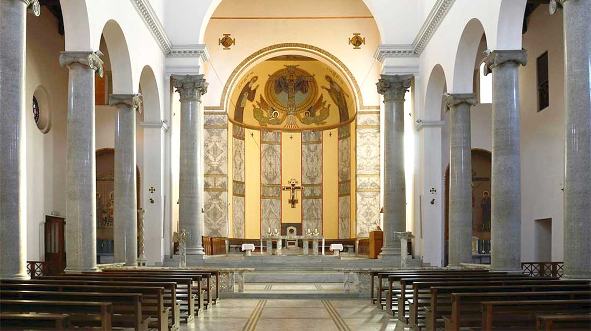

SANT'ANSELMO ALL'AVENTINO
Piazza dei Cavalieri di Malta, 5, 00153 Roma
La chiesa di Sant'Anselmo all'Aventino, è una chiesa di Roma, nel rione Ripa, in piazza dei Cavalieri di Malta. Assieme al monastero annesso forma la Badia Primaziale dell'ordine dei Benedettini.
La chiesa, malgrado le apparenze, è di recente costruzione; essa, infatti, risale alla fine dell'Ottocento, costruita da Francesco Vespignani tra il 1892 e il 1896, su un terreno donato dai Cavalieri di Malta ai Benedettini, che ne fecero, con l'annesso monastero e l'Università Teologica, il loro centro a Roma, sede dell'Abate Primate dell'Ordine.
La chiesa è in stile neoromanico, costruita dal Vespignani su progetto dell'abate benedettino belga Ildebrando de Hemptinne. L'interno si presenta a tre navate, divise tra loro da colonne di granito, con soffitto a capriate e abside decorata a mosaico; enorme è la cripta a cinque navate. La chiesa è costruita sui resti di una domus romana del II-III secolo d.C. (visibili nei sotterranei della chiesa); da questa domus proviene un mosaico, conservato nel monastero, raffigurante il Mito di Orfeo.
La chiesa è nota, soprattutto ai romani, per le esecuzioni di canto gregoriano offerte dai monaci durante le celebrazioni liturgiche domenicali.
Accanto alla chiesa hanno sede il Pontificio Ateneo Sant'Anselmo e il Pontificio Istituto Liturgico.
